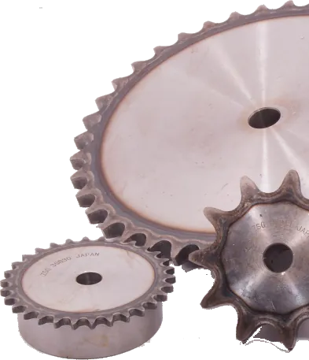

Cd. Cuauhtémoc, Chihuahua · LLARASA desde 1994
Llantas, refacciones agrícolas y partes para remolque
Venta de mayoreo y menudeo con envíos a todo México. Importamos gran parte de nuestros productos para ofrecerle variedad y precios competitivos.

No se deje engañar por páginas web o WhatsApp falsos, aunque le envíen nuestros datos fiscales. Nuestras únicas páginas oficiales son www.llarasa.com y www.redellantasonline.com.
Nuestros productos
Tres ramos principales, con inventario en Cuauhtémoc y envíos por paquetería y transporte.
Llantas
Agrícolas e industriales, además de llantas automotrices, de camión y para remolque. Servicio de montaje.
Ver llantas →
Refacciones agrícolas y herramientas
Puntas, rejas, brazos, flechas, catarinas, poleas, refacciones para empacadora y herramienta de taller.
Ver refacciones →
Partes para remolque
Ejes, masas, frenos, suspensión, gatos, jalones, rines, luces y más: 574 productos en el catálogo digital.
Ver partes para remolque →Nuevo
Catálogo digital de partes para remolque
Busque por código, nombre o medida, vea fotos y medidas, y arme su lista de pedido para enviarla por WhatsApp o en PDF.
Visítenos
- Teléfonos
- (625) 586-3010 · (625) 589-9429
- 625 121 5478
- Correo
- contacto@llarasa.mx
- Horario
- Lunes a viernes de 7:00 a.m. a 5:30 p.m.
Sábado de 7:00 a.m. a 12:30 p.m. - Dirección
- Km. 12 Carretera a Álvaro Obregón No. 1200, Campo No. 20, C.P. 31607, Cd. Cuauhtémoc, Chihuahua